Se decidió reorganizar la página de inicio de la aplicación dividiendo la pantalla en dos partes: las visitas agendadas próximas a realizarse y el calendario de agendamiento. Se decidió dar prioridad a las visitas agendadas a través de una selección de las más reciente hacia atrás y a través de esto acceder a las fichas y registro.
Chile Valora
Sitio web de prospección laboral
Prototipo navegable aquí.
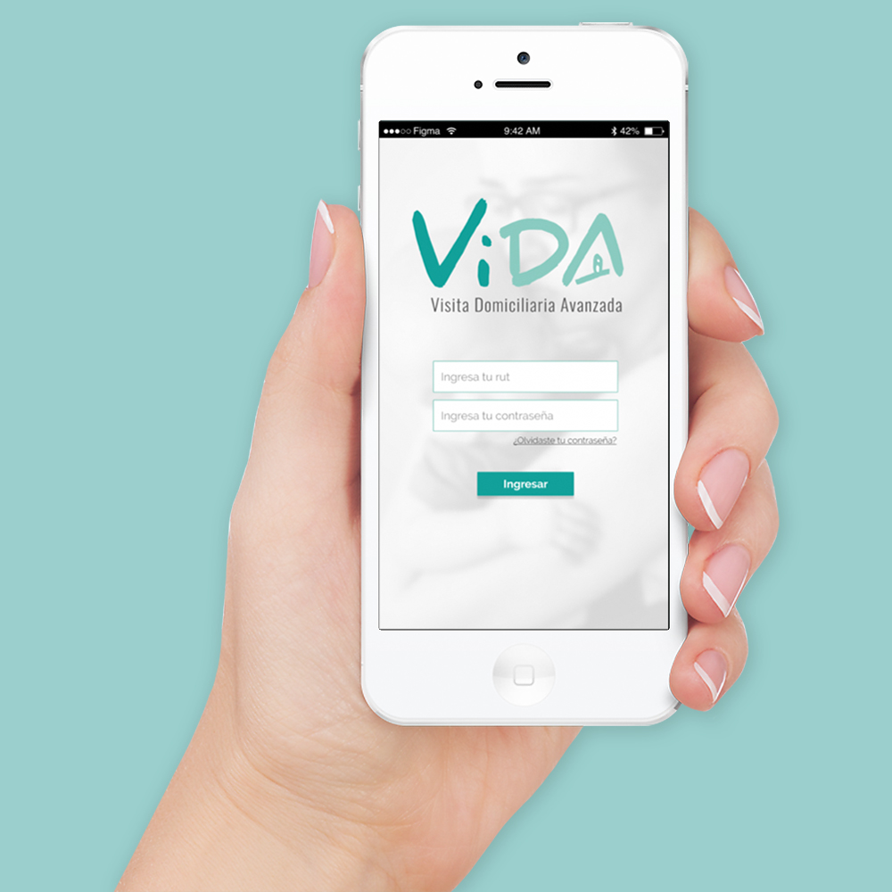
Preámbulo
Es un hecho concreto y evidente que la salud reproductiva y neonatal en mujeres chilenas se deteriora cuando están sometidas a factores de riesgo tanto físicos como psicológicos y sociales. Estos factores generan un marco de vulnerabilidad que agudiza y pone en peligro a veces la integridad de la madre y el niño/a.
Dentro del proyecto de investigación realizado por miembros de la Universidad Católica de Chile se ha creado la aplicación VIDA, que permite facilitar el registro e intervención de los profesionales visitadores que están en contacto directo con futuras madres en el sistema de atención primaria de salud (Cesfam).
El desafío
"Detectar problemas y rediseñar la app interactiva que utilizan las visitadoras/es sociales para la recolección de información en las visitas"
Mi rol
Siendo este un proyecto individual, realicé todos los procesos descritos a continuación, cumpliendo con el objetivo principal de "Lograr una mejora sustancial en el flujo de visita a domicilios particulares de gestantes y madres desde el punto de vista del profesional visitante, y así, facilitar el trabajo y el traspaso de información a otras plataformas para posteriormente realizar un mejor registro y monitoreo de los casos existentes".
Tareas realizadas
- 1.- Entendimiento del contexto.
- 2.- Evaluación heurística de la app actual.
- 3.- Investigación contextual de apps similares.
- 4.- Entrevistas y testeos a usuarios directos.
- 5.- Síntesis de la información recaudada e insights.
- 6.- LLuvia de ideas.
- 7.- Reestructuración de la arquitectura de información.
- 8.- Mapas de flujo.
- 9.- Prototipado de la nueva propuesta.
Proceso de diseño

Primer acercamiento: Encargados del proyecto
Primeramente se ha realizado una entrevista introductoria con Erika Kopplin, Psicóloga a cargo del proyecto, donde se aclaró el marco de la investigación general y se entregaron pautas iniciales para el desarrollo de la misma. Posteriormente nos trasladamos al Centro de investigación de la Universidad Católica ubicado en el campus San Joaquín donde se realizó una segunda reunión, esta vez con Mayra Martínez, investigadora e involucrada en el proyecto. De ahí se pudieron extraer varios problemas de usabilidad manifestados por ellas.
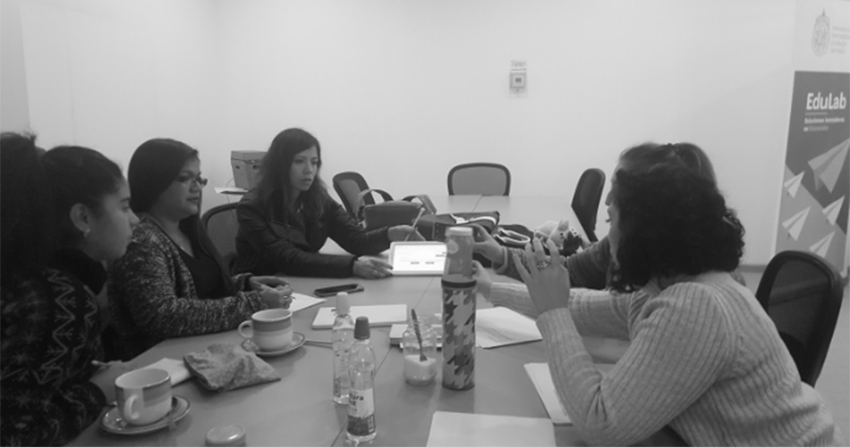
Primera reunión acordada con las encargadas del proyecto.
Análisis de aplicaciones similares
Se realizó una investigación para encontrar aplicaciones que entregan indicios de cómo se han solucionado problemas similares en otras plataformas. Las aplicaciones estudiadas son tres: dos encargadas del registro y procesamiento de datos y una sobre agendamiento de reuniones y calendario.
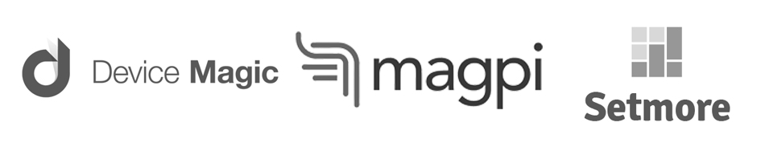
Conclusiones extraídas a partir del análisis:
- 1.- Las tres aplicaciones poseen la posibilidad del relleno de selecciones múltiples a preguntas simples y concretas, lo que facilita la rapidez y usabilidad de la información que el usuario quiere registrar.
- 2.- Todas ellas priorizan en la importancia de la sincronización de datos registrados en dispositivos móviles a las bases de datos existentes en la nube, que reduce el tiempo de registro y futura pérdida de información.
- 3.- En en caso de la aplicación del calendario, cuenta con alarmas y recordatorios a diferentes involucrados de las reuniones o citas a pactar, lo que ayuda al usuario a hacer uso de la aplicación activo.
Acercamiento a usuarios: Entrevistas y testeos
Realizamos entrevistas a tres personas relacionadas con el proyecto en Cesfams de la comuna de Renca. Dos de estas usuarias son Educadoras de párvulos y una es Trabajadora social. Se realizó primeramente una entrevista y posteriormente un test de usabilidad de la app actual.
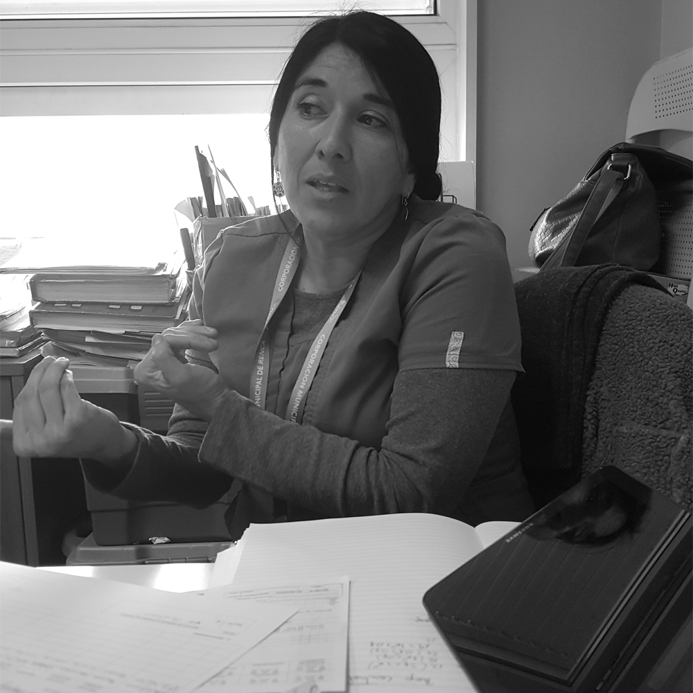
Jenny Alegría. Educadora de párvulos y usuaria de VIDA.
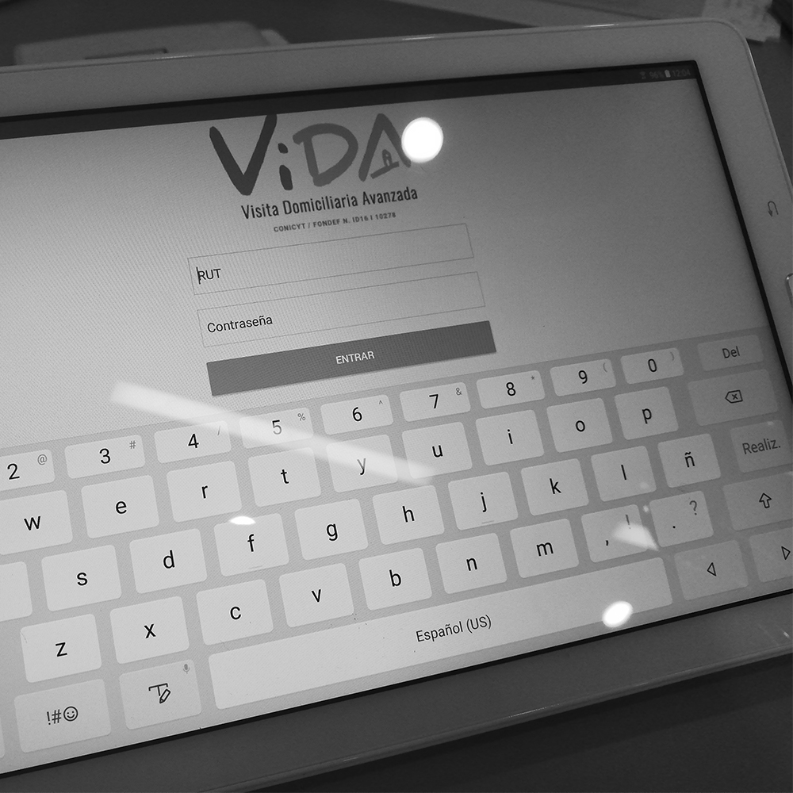
Testeo realizado de la aplicación actual.
"En general, no se sienten cómodas utilizando la aplicación por la falta de fluidez de esta y el miedo que provoca la misma a cometer errores."
Viaje de uso actual: Customer Journey Map
Posterior a las entrevistas y testeos realizados se hizo un Customer Journey Map para sintetizar un flujo actual de visita domiciliaria que realiza un usuario promedio.
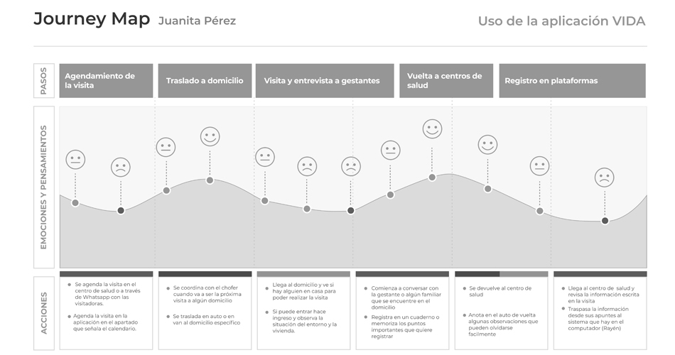Aprendizajes extraídos:
- 1.- En la etapa de agendamiento se puede ver que lo que más les molesta es la confirmación del agendamiento, y los impedimentos que esta supone.
- 2.- En la etapa de entrevista a gestantes les es difícil realizar observaciones en la aplicación ya que la modalidad de trabajo les impide sacarla o siquiera registrar por escrito a veces lo que se les está contando.
- 3.- La última etapa, la de registro en la plataforma, suele ser la más engorrosa por que supone doble trabajo al no poder sincronizar la información escrita con la de la plataforma.
Principales Insights: Temas a tratar
Después de todo el estudio previo y la bajada e internalización de la información recaudada se han podido concluir los principales insights que servirán de base para comenzar a idear la forma en que la aplicación va a ser rediseñada.
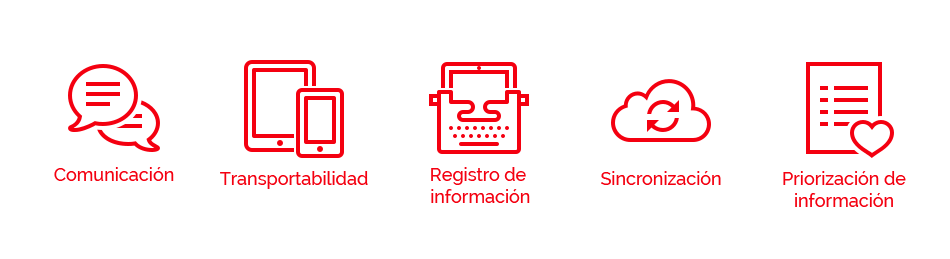
- 1.- Comunicación: Es necesario explorar una forma en que tanto los profesionales con los pacientes y los profesionales entre sí puedan tener una comunicación más fluida.
- 2.- Transportabilidad: Los profesionales no tienden a llevar tablets a las entrevistas debido a los ambientes peligrosos a los que se exponen y también por respeto a la precariedad de la situación de sus pacientes.
- 3.- Registro de información: Anotar la información en distintas plataformas a veces no es la manera ideal de recaudar información cuando se está en el domicilio de los pacientes.
- 4.- Sincronización: La conectividad y sincronización de información es un problema crucial en la facilidad del flujo de trabajo de los usuarios, es necesario facilitar la manera en que estos traspasan la información y así, reducir el tiempo de trabajo que le dedican a esto.
- 5.- Priorización de información: Los usuarios están obligados a tener que determinar por su cuenta cual es la información que más les sirve para poder registrarlo efectivamente en ambas plataformas.
Proceso de ideación: Lluvia de ideas
Definidos ya los descubrimientos y categorizados a través de temas, se dió paso a una lluvia de ideas que ayudó a concretar las propuestas de soluciones que no estaban tan bién definidas. La imagen a continuación muestra el proceso de bajada de información, insights y clasificación de la lluvia de ideas a través de temas.
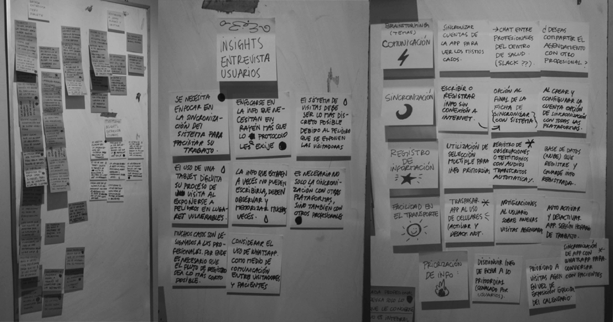
Etapas del proceso de ideación: Bajada de info, insights y Brainstorming.
Flujo de uso de la app
Este flujo se enfoca primordialmente en el agendamiento, registro y traspaso a plataformas de una visita. Así como funciones especiales ideadas en el Brainstorming.
Principales ideas a ejecutar
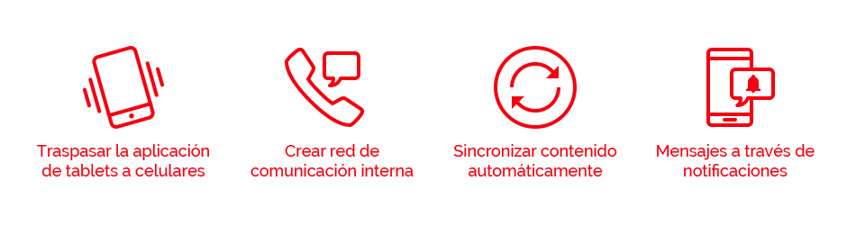
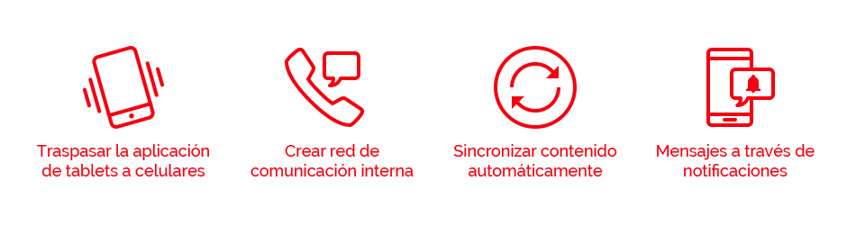
La propuesta de diseño
Guía de estilos
Se ha definido la guía de estilos en la aplicación con los colores a utilizar, la tipografía y tamaños de letras, algunos botones y componentes extra que facilitan la ejecución del prototipo y también dan una mejor idea de como es la apariencia general de esta.
Junto a esto se definió una reorganización completa de la arquitectura de información y la presentación de esta en las pantallas. El mayor desafío en este proceso fue adaptar las nuevas funcionalidades a un formato más pequeño sin perder visibilidad o acciones importantes. A continuación te presentamos la propuesta de diseño.
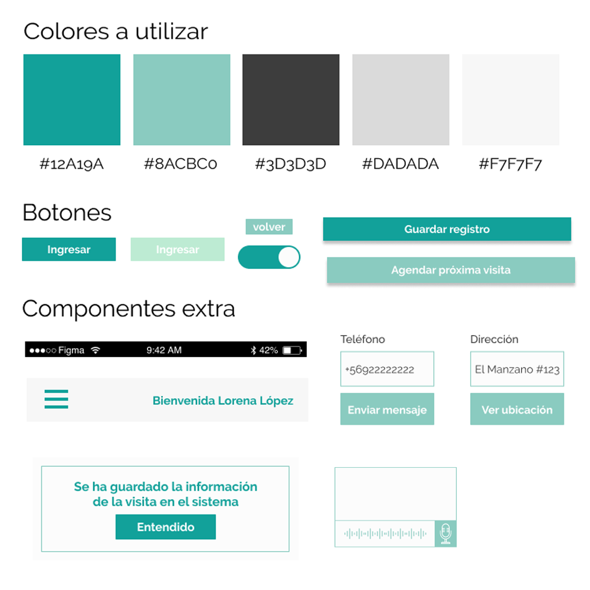
Concepto final
Prototipo navegable.
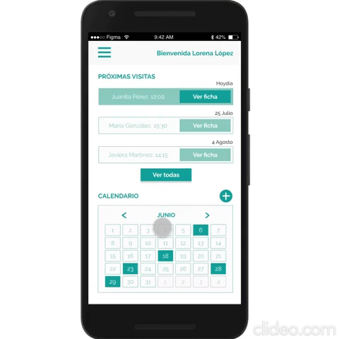
Flujo de registro de visita.
Decisiones de diseño
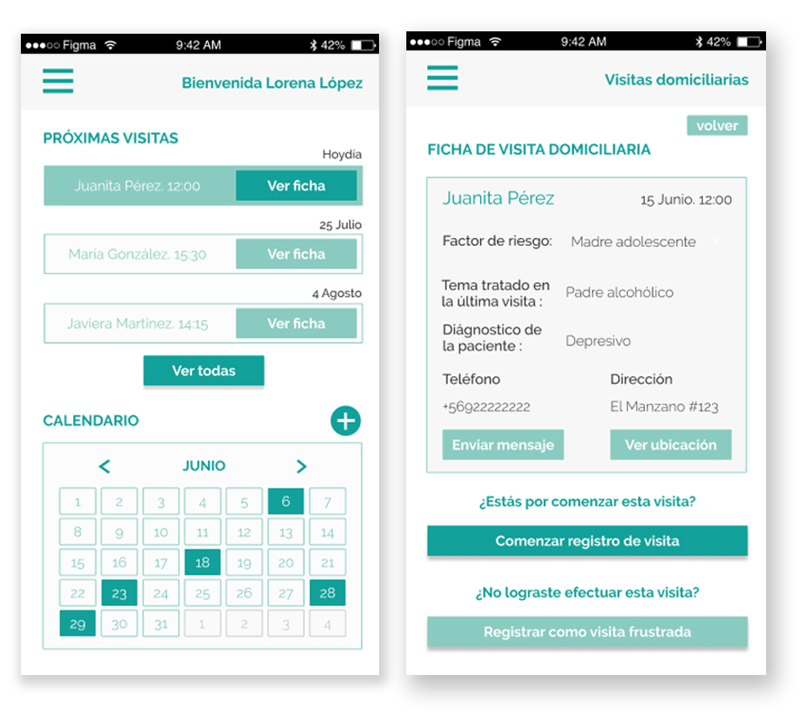
Pantalla de inicio y de ficha de registro.
Junto a esto se optó por conservar el calendario para realizar el agendamiento de visitas, ya que los usuarios manifestaron que es la forma más reconocible y confiable para conocer fechas y realizar el flujo de citación a visita domiciliaria.
Para facilitar la posibilidad de compartir la información se ha creado la posibilidad de enviar a través de mensajes o notificaciones las actualizaciones de registro de fichas de las gestantes con otros miembros de los equipos de trabajo que se encargan del mismo caso. De esta forma se logra facilitar la comunicación entre los profesionales evitando confusiones y, al mismo tiempo, involucrarlos a todos para que tengan una participación más dinámica e inclusiva.
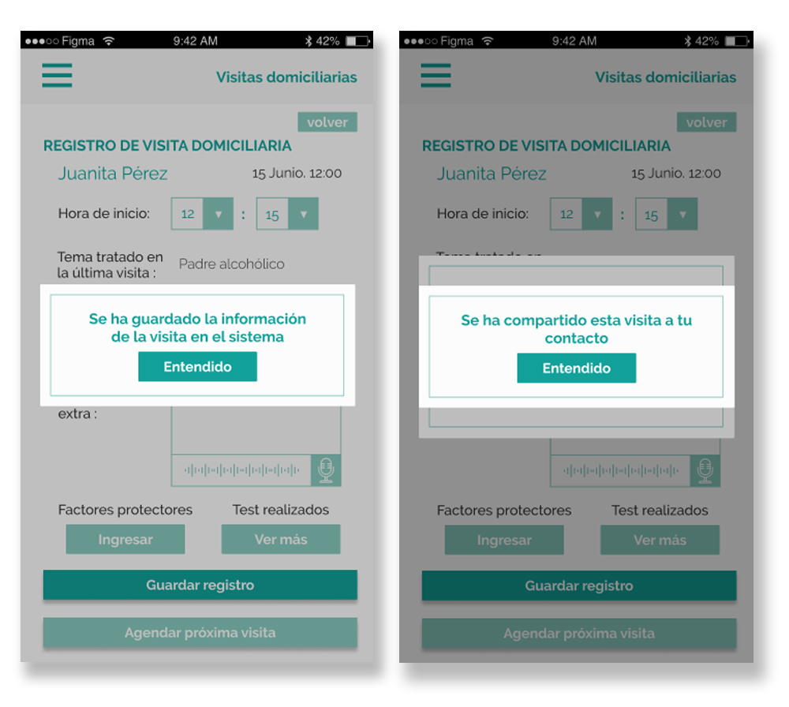
Pantalla de verificación de guardado y compartir.
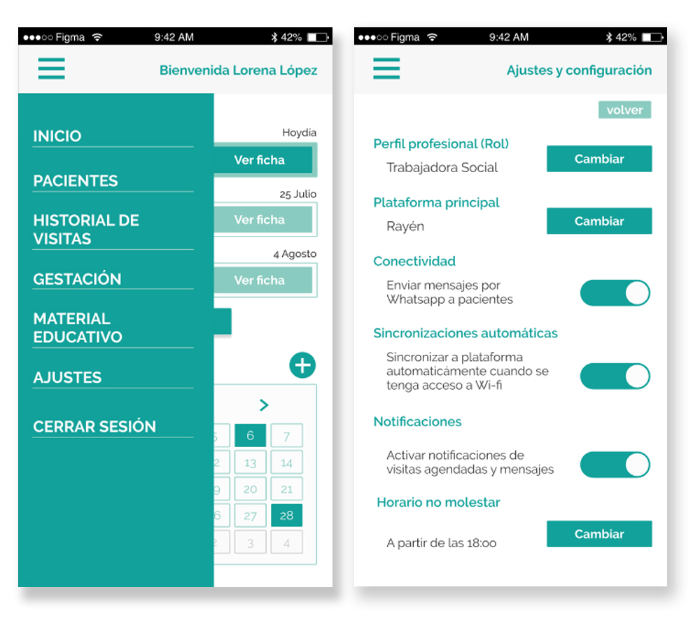
Menú principal de la aplicación y ajustes generales.
Finalmente se decidió reorganizar la información del menú principal para evitar la redundancia que existía en la aplicación para tablets. Asi mismo, la app esta pensada para ser configurada al inicio según las necesidades de cada profesional, es decir, que según su profesión aparezcan las herramientas e información que son más apropiadas para ello.
Junto a esto están otras opciones de personalización como la elección de la plataforma de sincronización, la elección de comunicación con los pacientes a través de whatsapp o la activación del horario "no molestar".
¿Cómo se va a ejecutar el proyecto? (Bussiness mindset)
Para poder explicar mejor el proceso de ejecución del proyecto se ha decidido dividirlo según los principales temas:
- 1.- Conectividad: Se ha pensado que para poder guardar la información realizada en las visitas es necesario la generación de una API (Interfaz de programación de aplicaciones) privada que permita el almacenamiento de información preestablecida de profesionales y pacientes. Esta API también debe entregar la posibilidad de que usuarios puedan registrar nuevos datos constantemente e ir a su vez, iterándolos.
- 2.- Comunicación: La comunicación se hace más efectiva a través de una herramienta que cree correos institucionales entre empleados y así, puedan enviarse notificaciones entre ellos sobre actualizaciones en la ficha de los pacientes o nuevos agendamientos de visitas. Asimismo, la creación de este correo permite que la API creada tenga un registro más detallado y formal de los miembros que la conforman.
- 3.- Profesionales y pacientes: Se ha detectado que el medio más utilizado entre profesionales y pacientes para el agendamiento de las visitas y dudas generales es Whatsapp, el cual se ha decidido incorporar en la aplicación como un medio de comunicación directa hacia las gestantes o madres.
- 4.- Notificaciones: Para lograr ejecutar notificaciones específicas se ha decidido utilizar el comando push, a través de la aplicación Appypie que permite la personalización de estas, esta también por decidirse si es necesario ejecutar este servicio o si simplemente se pueden crear estas notificaciones en el código nativo.
- 5.- Grabaciones con registro de texto: Debido muchas veces a la dificultad del registro de información por falta de tiempo o extrema improvisación de las visitas se ha decidido entregar la opción de poder grabar observaciones cortas de menos de un minuto, las cuales puedan transcribirse y quedar registradas en el sistema como texto.
Se espera que...
Para terminar, se espera que el desarrollo de esta profunda reforma a la aplicación actualmente en uso sea realmente un aporte para las usuarias, que logren utilizarla de manera intuitiva y al mismo tiempo les sea de uso fácil, y así, puedan facilitar su flujo de trabajo para enfocarse mejor en el seguimiento y apoyo en distintas áreas que necesitan las gestantes y madres en situación de riesgo social.
"En resumen, se pretende ser un aporte en mejorar la calidad de trabajo y por ende, de vida de las usuarias y al mismo tiempo, indirectamente, de las futuras y actuales madres de nuestro país".
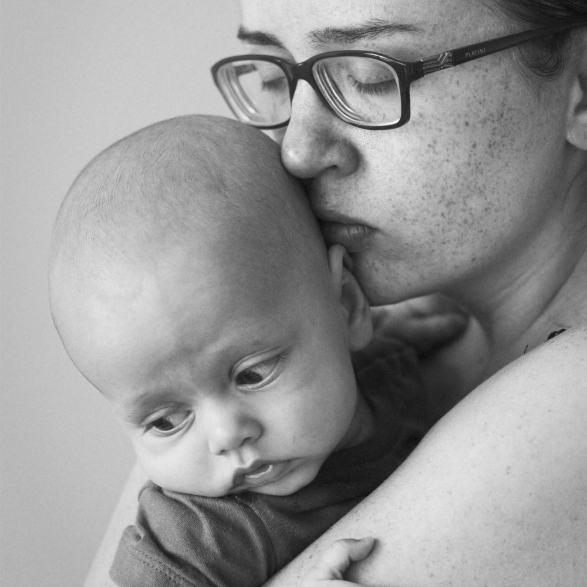